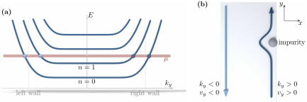
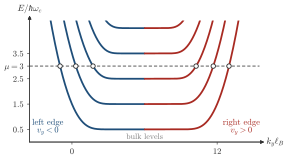

Page 3 of 13 of this session
4.5 Edge states and why an insulating bulk still conducts
There is an obvious puzzle. If the chemical potential is in a gap between two Landau levels, the bulk of the sample is by definition an insulator, with no partially filled band and no bulk states at the Fermi energy. So how can such a system carry a finite, quantized current? We will now see that the current is carried at the edge, by \(N\) chiral modes, one for each filled Landau level, which cannot backscatter.
\[|C_{\text{tot}}| = \Big|\sum_{n=0}^{N-1} C_n\Big| = N \quad\Longrightarrow\quad |\sigma_{xy}| = N\,\frac{e^2}{h}, \tag{4.2}\]
This is the Hall conductance of \(N\) filled Landau levels, from Section 4.4. Here \(C_n\) is the Chern number of the level \(n\), and \(C_{\text{tot}}\) is the Chern number of all the filled bands together.
The answer is the same as in the general bulk-boundary argument of Section 3.7. A nonzero Chern number cannot end without consequences. At any interface where the Chern number changes there must be protected, gapless and chiral edge modes. Here the interface is the boundary between a sample with a Chern number of magnitude \(N\) and the vacuum, which has \(C=0\), so there are \(N\) such modes. A chiral mode propagates in only one direction, and the number of edge modes at an interface is equal to the magnitude of the difference in Chern number across it.
At an interface between two gapped regions with the Chern numbers \(C_1\) and \(C_2\), the number of chiral modes is
\[N_{\text{modes}}=|C_1-C_2|.\]
At the edge of a sample with \(N\) filled Landau levels the vacuum has \(C=0\), so there are \(N\) modes. All the modes of one edge move in the same direction, and the states that move the other way sit at the opposite edge. So a local impurity cannot backscatter an electron, and the edge carries the current with no dissipation.
Every real sample is finite, so it always has an edge, and the edge states are always there, even when we do not think about them. A voltage between the top edge and the bottom edge of the sample creates an imbalance between the edge electrons that move to the right and the ones that move to the left. This imbalance is the quantized Hall current.
The band structure of a ribbon, which is a sample that is infinite in \(y\) and finite in \(x\), shows this picture in a completely explicit way. Next to the flat bulk Landau levels, we find a set of dispersive states localized at the left edge, which all propagate in one direction. A mirror set is localized at the right edge and propagates in the opposite direction. Each propagation direction is tied to a location, the left edge or the right edge. So an impurity on the left edge cannot scatter an electron into a state that moves the other way along \(y\), because these states are on the right edge, at a macroscopic distance. There is no available final state, so there is no backscattering, and the edge transport has no dissipation.
Figure 4.1 shows the ribbon spectrum next to its real-space picture, together with the chiral modes that cross the chemical potential.

The absence of backscattering is measured with the longitudinal resistance of a Hall bar, which vanishes when the current flows with no dissipation. In films of V-doped (Bi,Sb)\(_2\)Te\(_3\) at zero magnetic field the longitudinal resistance goes down to \(0.00013\pm0.00007\) in units of \(h/e^2\), which is \(3.35\pm1.76\ \Omega\), against \(h/e^2=25.8\) k\(\Omega\). The measurement is in this article. The state of these films is the quantum anomalous Hall state, which comes from spin-orbit coupling and ferromagnetism. In our reading it is a Chern insulator with \(|C|=1\) and not a Landau level, and its chiral edge follows from the same argument of Section 3.7.
An impurity sits on the left edge of a quantum Hall ribbon. Why can it not backscatter an edge electron?
Show the answers
- A. ✗ False
This is false. An impurity much stronger than the Landau level gap also cannot reflect the electron, which goes around it in the same direction. The reason is the missing final state, and not the strength.
- B. ✓ True
This is true. On one edge all the modes propagate in the same direction. A state that propagates the other way is on the other side of the sample, and a local impurity cannot connect the two.
- C. ✗ False
This is false. The magnetic field breaks time-reversal symmetry in this system. Time reversal protects the helical edge of the quantum spin Hall insulator, and here the protection comes from the chirality.
The chemical potential is in the gap above the first Landau level. It moves to the gap above the third level. How do the number of chiral modes at one edge and \(|\sigma_{xy}|\) change?
Show the answers
- A. ✗ False
This is false. The number of modes is \(|C|\), and \(|\sigma_{xy}|=|C|e^2/h\). A single chiral mode carries \(e^2/h\), so \(3e^2/h\) needs three modes.
- B. ✓ True
This is true. The number of chiral modes at an edge is equal to the magnitude of the Chern number of the bulk, which counts the filled Landau levels. The magnitude of the Hall conductance is this number times \(e^2/h\).

The continuum ribbon of width \(12\,\ell_B\) with hard walls, with the energy in units of \(\hbar\omega_c\) and the chemical potential \(\mu=3\hbar\omega_c\) in the gap above the third Landau level. The momentum \(k_y\ell_B\) is the guiding center in units of \(\ell_B\), measured from the left wall and not from the middle, so the walls are at \(0\) and \(12\). Each edge has three crossings, marked by the circles, which are the three chiral modes. - C. ✗ False
This is false. Two modes and \(2e^2/h\) belong to the gap above the second level. The gap above the third level has three filled levels, so three modes.
Each picture is the spectrum of a quantum Hall ribbon. The guiding center \(x_0=k_y\ell_B^2\) is on the hard walls at \(k_y\ell_B=0\) and \(12\). The dashed line is the chemical potential \(\mu\). Which ribbon has \(|\sigma_{xy}|=2e^2/h\)?
Show the answers
- A. ✗ False
This is false. Here \(\mu=\hbar\omega_c\), between the levels at \(\tfrac12\) and \(\tfrac32\) in units of \(\hbar\omega_c\). One branch crosses \(\mu\) at each edge, so there is one chiral mode per edge and \(|\sigma_{xy}|=e^2/h\).
- B. ✓ True
This is true. Here \(\mu=2\hbar\omega_c\), so two levels are filled. Two branches cross \(\mu\) at each edge, which are two chiral modes, and each mode adds \(e^2/h\).
- C. ✗ False
This is false. Here \(\mu=3\hbar\omega_c\), so three levels are filled and three branches cross \(\mu\) at each edge. This gives \(|\sigma_{xy}|=3e^2/h\).
We count the crossings at one edge and not at both, since the modes of the two edges move in opposite directions. When the field is reversed, the modes of each edge move the other way and \(\sigma_{xy}\) changes sign, while \(|\sigma_{xy}|\), the number of modes times \(e^2/h\), stays the same.
A gate sets \(N=2\) filled Landau levels on the left half of a sample and \(N=5\) on the right half, in the same field. How many chiral modes run along the line between the two halves?
Solution
Each half is a gapped quantum Hall state. The left half has a Chern number of magnitude \(2\) and the right half of magnitude \(5\), with the same sign, since the field is the same. The key box gives
\[N_{\text{modes}}=|C_1-C_2|=|5-2|=3.\]
We can also count the edge modes of each half. Along the line the right half has its own edge with five modes, and the left half has its edge with two modes. These two move in the opposite direction, since the two halves touch the line from opposite sides. Two pairs of opposite modes can mix and backscatter, and three modes remain, which move in the direction of the five modes of the right half.
The continuum ribbon of the figures gives the same count. We take a ribbon of width \(24\,\ell_B\) and the chemical potential \(\mu=5\hbar\omega_c\), with a step of the potential of \(3\hbar\omega_c\) on its left half. So the left half has \(2\) filled levels and the right half \(5\). Then \(2\) branches cross \(\mu\) at the left wall, \(3\) at the step and \(5\) at the right wall. The three modes at the step move in the same direction as the two at the left wall, and opposite to the five at the right wall. The count uses only the two Chern numbers, and a gate on one half of a Hall bar gives a line with three modes.
Notebook check-in: session4.ipynb, “Localization of the edge states in the quantum Hall effect in a ribbon” (Challenge), and “Localization of the edge states in the quantum Hall effect in an island” (Challenge)
Build a finite ribbon and a finite island in a magnetic field and look directly at where the edge-state wavefunctions are in real space. This confirms the separation between the left and the right edge, or along the perimeter of the island, which is the basis of the argument above for the absence of backscattering.
Try it. Run the cell and look at the four maps of the local density of states. At the two energies inside the gap above the zero mode, the weight sits at the edges and not in the middle. Change 0.01 in h.add_orbital_magnetic_field(0.01) to 0.02. The gap grows, and the edge weight stays at the boundary.
- In Section 5.14 the edge of a chiral p-wave superconductor has the same structure, with Majorana branches instead of electron branches.
- In Section 6.16 a topological magnon band has chiral magnon edge modes, which carry spin and energy and not charge.
- In Section 9.8 a vacancy is a boundary of zero size, and in a Chern insulator it binds a state inside the gap.